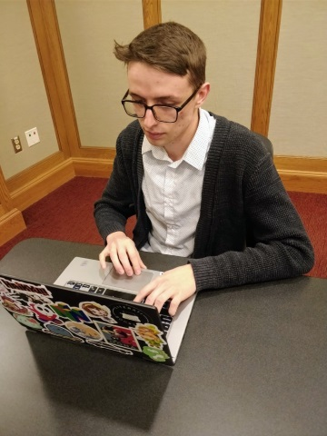

Vistal Product Design
December 2017
Summary
Just the important information.
This project saw myself and the team I worked with go from problem definition, all the way to a working digital prototype. The project was built around the CHI (Conference on Human Factors in Computing Systems) 2017 student design challenge. This challenge encouraged students to work on design problems that would help communities which often do not benefit equally from technological advances. We decided to target local art communities, since this could help benefit artists, art lovers, and those who want to engage in meaningful ways with their local communities. The problem we identified that we wanted to try and solve for this community was low engagement. That is, we wanted to enable more people to easily find and interact with the art in their communities.
To solve this problem, we decided that a mobile application that allows interested people to see what art is around would be the basis of our solution. Our process for coming to this solution included many ideation exercises, including:
- Ideation
- • Problem Statement Creation
- • Competitive Analysis
- Lo-Fi
- • Sketches and Storyboards
- • Personas and Scenarios
- • Design Space Analysis
- • Paper Prototype
- Hi-Fi
- • Digital Prototype

A snapshot of me testing our digital prototype.
One Takeaway
I believe the most valuable thing I learned while working on this project was how to work together with a team to
identify and define a problem. We were given great freedom to explore any problem related to the design challenge's
prompt, so ensuring that our project had direction and structure required us to align our understanding of the problem
with discussions and ultimately voting. We encountered many conflicting ideas about what the problem and project should
be, but I believe these passionate debates ultimately led to the high level of focus the rest of our project maintained.
Some Highlights
Details on notable milestones of our design process.
Video of the final digital prototype.
This is a video that highlights the important features in our final digital prototype. This prototype was demoed live during an exhibition style expo, and it brought much of our imagined design to life. This was a notable aspect of the project because it required us to utilize iteration effectively to achieve this level of fidelity. Additionally, it required us to hone our skills using tools like InVision and Sketch in a collaborative environment.
Personas
I believe the creation of the personas for this project was a valuable learning experience for me. Due to the ambitious nature of this project, and the time constraints imposed by the wide scope, we did not have as much time to conduct as much target user research as would have been ideal. Because of this, we had to rely on the small amount of interviews we had time to conduct. We knew that this could lead to personas that do not accurately reflect the needs and desires of our target users, so this meant we had to constantly be aware of the potential shortcomings of relying too heavily on our personas. Despite these shortcomings, we were able to create personas that greatly aided our ability to give our app an identity. You can examine our primary persona below.
Sketches and Storyboards
The sketching phase of our project allowed us to think about the problem of engagement in local art communities in a wide variety of ways. It allowed us to consider traditional methods of engagement such as advertising and art events, while also keeping emerging technologies in mind like augmented-reality. This tied directly into the storyboarding activity we engaged in, which saw us put our personas into usage situations that gave our project a more concrete direction. We wanted our scenarios to tell a story about the product we envisioned, so we decided to draft them into storyboards.
|
|
| A snippet of the 100+ solution sketches drawn for this project. |